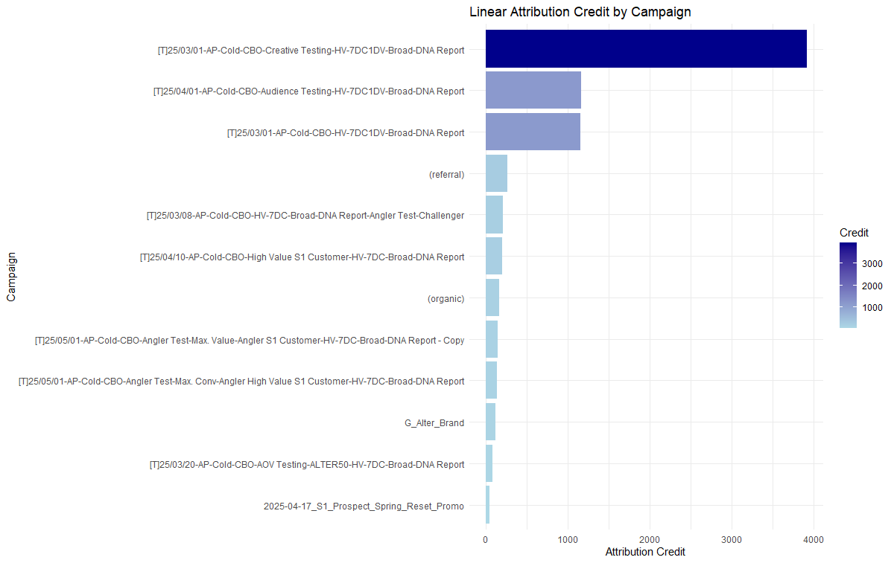

Hi, I’m Braden.
Welcome to version 3.6.3 of my interactive Web Portfolio. I’m a research-driven data scientist with a background in behavioral science and a passion for uncovering patterns in human behavior. This customized AI can answer questions about my experience, work, or background.
Ask Me Anything
My Projects
Sales Funnel Attribution Model
Multi-touch attribution across web, CRM, and transactional data
Net Promoter Score and Feedback Analysis
Visualization and objective outlining
Full Customer Outreach Automation
Developing and maintaining a full cadence automation for all regular customer outreach
Side Project: Fully Automated Social Media Management Service
Automatic selection, captioning, and posting of professional Meta Pages
Side Project: Public Macroeconomic Recession Indicators
Researching, aggregating, and exploring the influence of media usage and luxury purchases on perceived and objective economic factors
Full Statistical and Analytical Quarterly Insight Reporting
Taking large, unrelated issues and identifying insights and trends for business objectives
Sales Funnel Attribution Model
I developed a custom multi-touch attribution model that integrates Google Analytics, CRM (Salesforce), and transaction data to quantify the influence of marketing channels across the full funnel.
- Unified tracking across web, CRM, and sales platforms
- Created a unified, organized table with web analytics, demographic predictors, and internal behvaiors
- Used logistic regression to estimate conversion probabilities
- Generated >15 unique models to calculate and predict conversion rate
- Delivered weekly dashboards in Sigma for marketing leadership
- Identified >10 key targets for leadership to implement improved targeting, resulting in improved conversion rate and lower CPAs
Net Promoter Score and Feedback Analysis
Utilizing an anonymous feedback survey, outlined key objectives for Product and Marketing teams to emphasize based on feedback trends.
- Implemented automated, anonymized distribution of survey to ensure proper gathering techniques
- Identified key objectives for the organization on a rolling basis based on continuous and nominal data
- Implemented LLM (AI) analysis on open-ended feedback to draw patterns and identify strengths and weaknesses
- Identified which pieces of the organization were associated with higher/lower NP Scores to stack-rank customer-perceived weaknesses
Full Customer Outreach Automation
I created a full, multi-medium outreach outreach inside a CRM (Salesforce) from conceptualization to implementation

- Created, maintained, and organized cadence flow visualization to simplify viewing and changes from leadership
- Outlined, implemented, and maintained the logic for consistent, clean outreach over the entire customer journey
- Through the course of the project, touched and improved nearly every KPI in the organization through improved outreach
- Boosted customer engagement and retention by 30%
- Boosted full funnel conversion rate by 20%
Side Project: Fully Automated Social Media Management Service
I developed and created an autonomous service with a series of commands and webhooks that would select media from a catalogue, caption it dynamically, post it, and manage responses.

- Aimed to solve the problem of consistently managing a consistent social media presence, something that is important for growth, especially among young, less-funded startup ideas
- On a custom interval, my service would select a random piece of media from a catalogue and send it via webhook to an AI API capable of image recognition
- The API would return a caption for the media, along with the suggested target audiences
- A post would then be created with a fully automatically generated caption
- This service allowed for a consistent media presence to be created and maintained without a dedicated media representative, a service that would usually take anywhere from 20-40 hours/week
- I also hooked up an auto-responder for comments, engagements, and direct messages to enable a fully hands-off approach to media management
- With regular usage, the following for the test page grew exponentially, as Meta algorithms favor regular posters
Side Project: Public Macroeconomic Recession Indicators
Ongoing project exploring how publicly available trends around media usage and luxury purchase relate and predict to economic indicators.
- Aiming to identify if there is a directional relationship between luxury purchases made domestically (US), media usage, perceived "free time" and economic indicators
- The primary indicators I aim to examine and use are GDP, Unemployment rate, and interest rates
- I will also explore the interaction(s) between each of these indicators and common demographic variables as they relate to my predictor variables, such as media usage and unemployment rates by age
- I aim to explore these relationships, as well as explore the potential of Media usage as an second-order indicator of economic recession
Full Statistical and Analytical Quarterly Insight Reporting
Example project from a quarterly insight report. We noticed a negative trend in conversion rate Q3 to Q4, so I did a statistical deep dive into identifying key explanatory differences:
- Identified and visualized Key Performance Indicators
- Identified key trends and important issues
- Offered unique insights and action items
- Supplied and offered thorough recommendations based on evidential insights
Curriculum Vitae
You can view or download my full CV below.